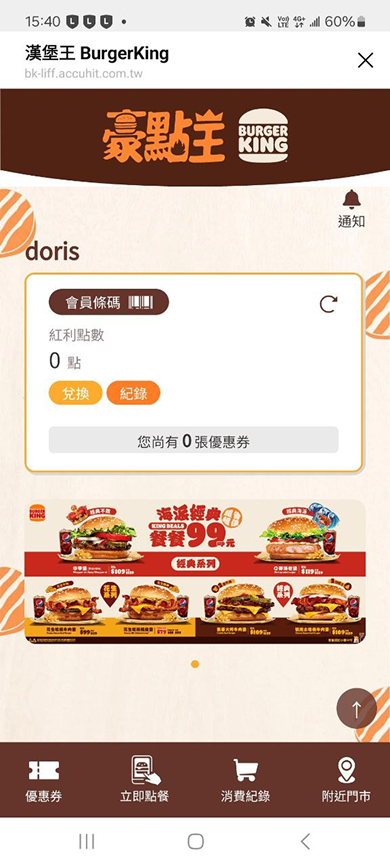
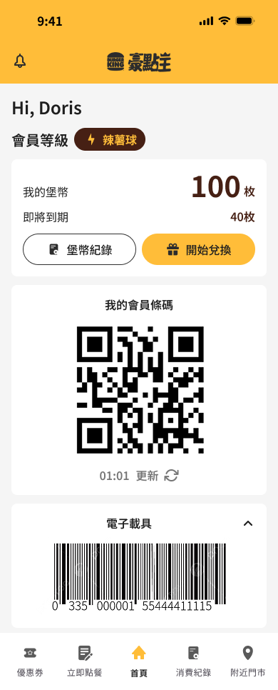
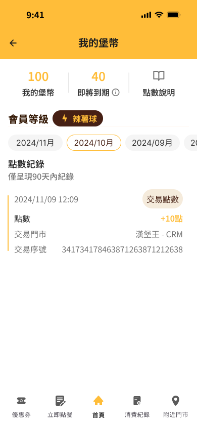
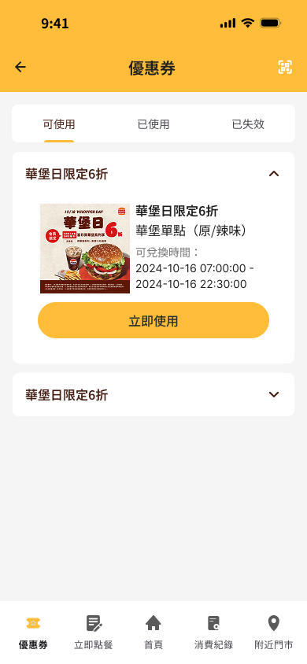
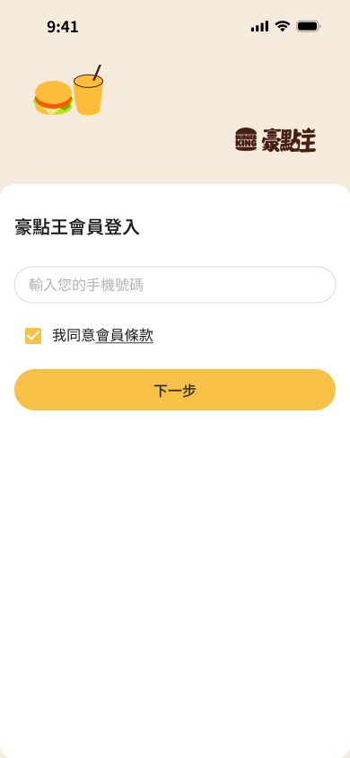

把一個「打開就想關掉」的速食 LINE LIFF 網站，改成用戶真正會用的會員工具 — 以 Before / After 對照，讓每一處改善都有跡可循。
基於保密協議，本頁僅展示部分畫面與流程，不包含完整介面內容。
| 舊版問題 | 新版設計解法 |
|---|---|
| 首頁資訊雜亂，Banner 佔據大量版面 | 會員條碼 + QR Code 置於首頁核心位置 |
| 視覺風格過時（棕色暗沈） | 白底 + 金黃色 CTA，乾淨現代 |
| 優惠券只顯示數量，無分類 | 5 種狀態分類 + 使用條件說明 |
| 堡幣系統入口不明顯 | 首頁直接顯示堡幣 + 到期提醒 + 兌換按鈕 |
| 缺少載具綁定提示 | 區分已/未綁定載具兩種狀態 |
| 導覽列圖示不直覺 | 5 個清楚標籤，首頁居中 |




| 設計元素 | 舊版 → 新版 | 原因 |
|---|---|---|
| 主色調 | 棕色暗沈 → 白底 + 金黃色 | 大幅提升清爽感與品牌現代感 |
| 資訊層級 | Banner 優先 → 功能優先 | 按使用頻率排列，符合 F 型閱讀模式 |
| 卡片設計 | 平面無層次 → 圓角 + 淺陰影 | 現代 UI 風格，提升視覺層次 |
| 底部導覽 | 4 tab → 5 tab，首頁居中 | 符合拇指熱區，最常用功能最易觸及 |
| 會員等級 | 僅文字 → 徽章式標籤 | 趣味命名增加品牌記憶點 |
